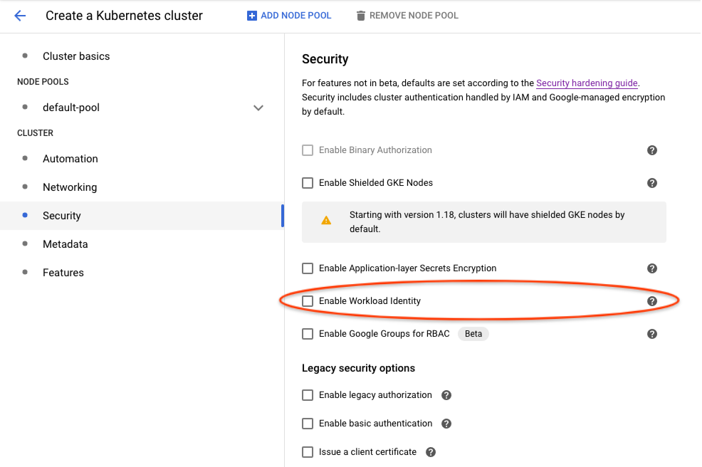

This is the multi-page printable view of this section. Click here to print.
Pipelines on Google Cloud
- 1: Connecting to Kubeflow Pipelines on Google Cloud using the SDK
- 2: Authenticating Pipelines to Google Cloud
- 3: Upgrading
- 4: Enabling GPU and TPU
- 5: Using Preemptible VMs and GPUs on Google Cloud
1 - Connecting to Kubeflow Pipelines on Google Cloud using the SDK
This guide describes how to connect to your Kubeflow Pipelines cluster on Google Cloud using the Kubeflow Pipelines SDK.
Before you begin
- You need a Kubeflow Pipelines deployment on Google Cloud using one of the installation options.
- Install the Kubeflow Pipelines SDK.
How SDK connects to Kubeflow Pipelines API
Kubeflow Pipelines includes an API service named ml-pipeline-ui. The
ml-pipeline-ui API service is deployed in the same Kubernetes namespace you
deployed Kubeflow Pipelines in.
The Kubeflow Pipelines SDK can send REST API requests to this API service, but the SDK needs to know the hostname to connect to the API service.
If the hostname can be accessed without authentication, it’s very simple to
connect to it. For example, you can use kubectl port-forward to access it via
localhost:
# The Kubeflow Pipelines API service and the UI is available at
# http://localhost:3000 without authentication check.
$ kubectl port-forward svc/ml-pipeline-ui 3000:80 --namespace kubeflow
# Change the namespace if you deployed Kubeflow Pipelines in a different
# namespace.
import kfp
client = kfp.Client(host='http://localhost:3000')
When deploying Kubeflow Pipelines on Google Cloud, a public endpoint for this API service is auto-configured for you, but this public endpoint has security checks to protect your cluster from unauthorized access.
The following sections introduce how to authenticate your SDK requests to connect to Kubeflow Pipelines via the public endpoint.
Connecting to Kubeflow Pipelines standalone or AI Platform Pipelines
Refer to Connecting to AI Platform Pipelines using the Kubeflow Pipelines SDK for both Kubeflow Pipelines standalone and AI Platform Pipelines.
Kubeflow Pipelines standalone deployments also show up in AI Platform Pipelines. They have the
name “pipeline” by default, but you can customize the name by overriding
the appName parameter in params.env when deploying Kubeflow Pipelines standalone.
Connecting to Kubeflow Pipelines in a full Kubeflow deployment
A full Kubeflow deployment on Google Cloud uses an Identity-Aware Proxy (IAP) to manage access to the public Kubeflow endpoint. The steps below let you connect to Kubeflow Pipelines in a full Kubeflow deployment with authentication through IAP.
-
Find out your IAP OAuth 2.0 client ID.
You or your cluster admin followed Set up OAuth for Cloud IAP to deploy your full Kubeflow deployment on Google Cloud. You need the OAuth client ID created in that step.
You can browse all of your existing OAuth client IDs in the Credentials page of Google Cloud Console.
-
Create another SDK OAuth Client ID for authenticating Kubeflow Pipelines SDK users. Follow the steps to set up a client ID to authenticate from a desktop app. Take a note of the client ID and client secret. This client ID and secret can be shared among all SDK users, because a separate login step is still needed below.
-
To connect to Kubeflow Pipelines public endpoint, initiate SDK client like the following:
import kfp client = kfp.Client(host='https://<KF_NAME>.endpoints.<PROJECT>.cloud.goog/pipeline', client_id='<AAAAAAAAAAAAAAAAAAAAAA>.apps.googleusercontent.com', other_client_id='<BBBBBBBBBBBBBBBBBBB>.apps.googleusercontent.com', other_client_secret='<CCCCCCCCCCCCCCCCCCCC>')- Pass your IAP OAuth client ID found in step 1 to
client_idargument. - Pass your SDK OAuth client ID and secret created in step 2 to
other_client_idandother_client_secretarguments.
- Pass your IAP OAuth client ID found in step 1 to
-
When you init the SDK client for the first time, you will be asked to log in. The Kubeflow Pipelines SDK stores obtained credentials in
$HOME/.config/kfp/credentials.json. You do not need to log in again unless you manually delete the credentials file.To use the SDK from cron tasks where you cannot log in manually, you can copy the credentials file in `$HOME/.config/kfp/credentials.json` to another machine. However, you should keep the credentials safe and never expose it to third parties. -
After login, you can use the client.
print(client.list_pipelines())
Troubleshooting
-
Error “Failed to authorize with API resource references: there is no user identity header” when using SDK methods.
Direct access to the API service without authentication works for Kubeflow Pipelines standalone, AI Platform Pipelines, and Kubeflow 1.0 or earlier.
However, it fails authorization checks for Kubeflow Pipelines with multi-user isolation in the full Kubeflow deployment starting from Kubeflow 1.1. Multi-user isolation requires all API access to authenticate as a user. Refer to Kubeflow Pipelines Multi-user isolation documentation for more details.
2 - Authenticating Pipelines to Google Cloud
This page describes authentication for Kubeflow Pipelines to Google Cloud. Available options listed below have different tradeoffs. You should choose the one that fits your use-case.
- Configuring your cluster to access Google Cloud using Compute Engine default service account with the “cloud-platform” scope is easier to set up than the other options. However, this approach grants excessive permissions. Therefore, it is not suitable if you need workload permission separation.
- Workload Identity takes more efforts to set up, but allows fine-grained permission control. It is recommended for production use-cases.
- Google service account keys stored as Kubernetes secrets is the legacy approach and no longer recommended in Google Kubernetes Engine. However, it’s the only option to use Google Cloud APIs when your cluster is an anthos or on-prem cluster.
Before you begin
There are various options on how to install Kubeflow Pipelines in the Installation Options for Kubeflow Pipelines guide. Be aware that authentication support and cluster setup instructions will vary depending on the method you used to install Kubeflow Pipelines.
- For Kubeflow Pipelines standalone, you can compare and choose from all 3 options.
- For full Kubeflow starting from Kubeflow 1.1, Workload Identity is the recommended and default option.
- For AI Platform Pipelines, Compute Engine default service account is the only supported option.
Compute Engine default service account
This is good for trying out Kubeflow Pipelines, because it is easy to set up.
However, it does not support permission separation for workloads in the cluster. Any workload in the cluster will be able to call any Google Cloud APIs in the chosen scope.
Cluster setup to use Compute Engine default service account
By default, your Google Kubernetes Engine nodes use Compute Engine default service account. If you allowed cloud-platform scope when creating the cluster,
Kubeflow Pipelines can authenticate to Google Cloud and manage resources in your project without further configuration.
Use one of the following options to create a Google Kubernetes Engine cluster that uses the Compute Engine default service account:
- If you followed instructions in Setting up AI Platform Pipelines and checked
Allow access to the following Cloud APIs, your cluster is already using Compute Engine default service account. - In Google Cloud Console UI, you can enable it in
Create a Kubernetes cluster -> default-pool -> Security -> Access Scopes -> Allow full access to all Cloud APIslike the following:
- Using
gcloudCLI, you can enable it with--scopes cloud-platformlike the following:
gcloud container clusters create <cluster-name> \
--scopes cloud-platform
Please refer to gcloud container clusters create command documentation for other available options.
Authoring pipelines to use default service account
Pipelines don’t need any specific changes to authenticate to Google Cloud, it will use the default service account transparently.
However, you must update existing pipelines that use the use_gcp_secret kfp sdk operator. Remove the use_gcp_secret usage to let your pipeline authenticate to Google Cloud using the default service account.
Securing the cluster with fine-grained Google Cloud permission control
Workload Identity
Workload Identity is the recommended way for your Google Kubernetes Engine applications to consume services provided by Google APIs. You accomplish this by configuring a Kubernetes service account to act as a Google service account. Any Pods running as the Kubernetes service account then use the Google service account to authenticate to cloud services.
Referenced from Workload Identity Documentation. Please read this doc for:
- A detailed introduction to Workload Identity.
- Instructions to enable it on your cluster.
- Whether its limitations affect your adoption.
Terminology
This document distinguishes between Kubernetes service accounts (KSAs) and Google service accounts (GSAs). KSAs are Kubernetes resources, while GSAs are specific to Google Cloud. Other documentation usually refers to both of them as just “service accounts”.
Authoring pipelines to use Workload Identity
Pipelines don’t need any specific changes to authenticate to Google Cloud. With Workload Identity, pipelines run as the Google service account that is bound to the KSA.
However, existing pipelines that use use_gcp_secret kfp sdk operator need to remove the use_gcp_secret usage to use the bound GSA.
You can also continue to use use_gcp_secret in a cluster with Workload Identity enabled and use_gcp_secret will take precedence for those workloads.
Cluster setup to use Workload Identity for Full Kubeflow
Starting from Kubeflow 1.1, Kubeflow Pipelines supports multi-user isolation. Therefore, pipeline runs are executed in user namespaces using the default-editor KSA. The default-editor KSA is auto-bound to the GSA specified in the user profile, which defaults to a shared GSA ${KFNAME}-user@${PROJECT}.iam.gserviceaccount.com.
If you want to bind the default-editor KSA with a different GSA for a specific namespace, refer to the In-cluster authentication to Google Cloud guide.
Additionally, the Kubeflow Pipelines UI, visualization, and TensorBoard server instances are deployed in your user namespace using the default-editor KSA. Therefore, to visualize results in the Pipelines UI, they can fetch artifacts in Google Cloud Storage using permissions of the same GSA you configured for this namespace.
Cluster setup to use Workload Identity for Pipelines Standalone
1. Create your cluster with Workload Identity enabled
-
In Google Cloud Console UI, you can enable Workload Identity in
Create a Kubernetes cluster -> Security -> Enable Workload Identitylike the following:  -
Using
gcloudCLI, you can enable it with:
gcloud beta container clusters create <cluster-name> \
--release-channel regular \
--workload-pool=project-id.svc.id.goog
References:
2. Deploy Kubeflow Pipelines
Deploy via Pipelines Standalone as usual.
3. Bind Workload Identities for KSAs used by Kubeflow Pipelines
The following helper bash scripts bind Workload Identities for KSAs used by Kubeflow Pipelines:
- gcp-workload-identity-setup.sh helps you create GSAs and bind them to KSAs used by pipelines workloads. This script provides an interactive command line dialog with explanation messages.
- wi-utils.sh alternatively provides minimal utility bash functions that let you customize your setup. The minimal utilities make it easy to read and use programmatically.
For example, to get a default setup using gcp-workload-identity-setup.sh, you can
$ curl -O https://raw.githubusercontent.com/kubeflow/pipelines/master/manifests/kustomize/gcp-workload-identity-setup.sh
$ chmod +x ./gcp-workload-identity-setup.sh
$ ./gcp-workload-identity-setup.sh
# This prints the command's usage example and introduction.
# Then you can run the command with required parameters.
# Command output will tell you which GSAs and Workload Identity bindings have been
# created.
4. Configure IAM permissions of used GSAs
If you used gcp-workload-identity-setup.sh to bind Workload Identities for your cluster, you can simply add the following IAM bindings:
- Give GSA
<cluster-name>-kfp-system@<project-id>.iam.gserviceaccount.comStorage Object Viewerrole to let UI load data in GCS in the same project. - Give GSA
<cluster-name>-kfp-user@<project-id>.iam.gserviceaccount.comany permissions your pipelines need. For quick tryouts, you can give itProject Editorrole for all permissions.
If you configured bindings by yourself, here are Google Cloud permission requirements for KFP KSAs:
- Pipelines use
pipeline-runnerKSA. Configure IAM permissions of the GSA bound to this KSA to allow pipelines use Google Cloud APIs. - Pipelines UI uses
ml-pipeline-uiKSA. Pipelines Visualization Server usesml-pipeline-visualizationserverKSA. If you need to view artifacts and visualizations stored in Google Cloud Storage (GCS) from pipelines UI, you should add Storage Object Viewer permission (or the minimal required permission) to their bound GSAs.
Google service account keys stored as Kubernetes secrets
It is recommended to use Workload Identity for easier and secure management, but you can also choose to use GSA keys.
Authoring pipelines to use GSA keys
Each pipeline step describes a
container that is run independently. If you want to grant access for a single step to use
one of your service accounts, you can use
kfp.gcp.use_gcp_secret().
Examples for how to use this function can be found in the
Kubeflow examples repo.
Cluster setup to use use_gcp_secret for Full Kubeflow
From Kubeflow 1.1, there’s no longer a user-gcp-sa secrets deployed for you. Recommend using Workload Identity instead.
For Kubeflow 1.0 or earlier, you don’t need to do anything. Full Kubeflow deployment has already deployed the user-gcp-sa secret for you.
Cluster setup to use use_gcp_secret for Pipelines Standalone
Pipelines Standalone require your manual setup for the user-gcp-sa secret used by use_gcp_secret.
Instructions to set up the secret:
-
First download the GCE VM service account token (refer to Google Cloud documentation for more information):
gcloud iam service-accounts keys create application_default_credentials.json \ --iam-account [SA-NAME]@[PROJECT-ID].iam.gserviceaccount.com -
Run:
kubectl create secret -n [your-namespace] generic user-gcp-sa \ --from-file=user-gcp-sa.json=application_default_credentials.json
3 - Upgrading
Before you begin
There are various options on how to install Kubeflow Pipelines in the Installation Options for Kubeflow Pipelines guide. Be aware that upgrade support and instructions will vary depending on the method you used to install Kubeflow Pipelines.
Upgrade-related feature matrix
| Installation \ Features | In-place upgrade | Reinstallation on the same cluster | Reinstallation on a different cluster | User customizations across upgrades (via Kustomize) |
|---|---|---|---|---|
| Standalone | ✅ | ⚠️ Data is deleted by default. | ✅ | |
| Standalone (managed storage) | ✅ | ✅ | ✅ | ✅ |
| full Kubeflow (>= v1.1) | ✅ | ✅ | Needs documentation | ✅ |
| full Kubeflow (< v1.1) | ✅ | ✅ | ||
| AI Platform Pipelines | ✅ | |||
| AI Platform Pipelines (managed storage) | ✅ | ✅ |
Notes:
- When you deploy Kubeflow Pipelines with managed storage on Google Cloud, you pipeline’s metadata and artifacts are stored in Cloud Storage and Cloud SQL. Using managed storage makes it easier to manage, back up, and restore Kubeflow Pipelines data.
Kubeflow Pipelines Standalone
Upgrade Support for Kubeflow Pipelines Standalone is in Beta.
Upgrading Kubeflow Pipelines Standalone introduces how to upgrade in-place.
Full Kubeflow
On Google Cloud, the full Kubeflow deployment follows the package pattern starting from Kubeflow 1.1.
The package pattern enables you to upgrade the full Kubeflow in-place while keeping user customizations — refer to the Upgrade Kubeflow on Google Cloud documentation for instructions.
However, there’s no current support to upgrade from Kubeflow 1.0 or earlier to Kubeflow 1.1 while keeping Kubeflow Pipelines data. This may change in the future, so provide your feedback in kubeflow/pipelines#4346 on GitHub.
AI Platform Pipelines
Upgrade Support for AI Platform Pipelines is in Alpha.
Warning
Kubeflow Pipelines Standalone deployments also show up in the AI Platform Pipelines dashboard, DO NOT follow instructions below if you deployed Kubeflow Pipelines using standalone deployment. Because data is deleted by default when a Kubeflow Pipelines Standalone deployment is deleted.Below are the steps that describe how to upgrade your AI Platform Pipelines instance while keeping existing data:
For instances without managed storage:
- Delete your AI Platform Pipelines instance WITHOUT selecting Delete cluster. The persisted artifacts and database data are stored in persistent volumes in the cluster. They are kept by default when you do not delete the cluster.
- Reinstall Kubeflow Pipelines from the Google Cloud Marketplace using the same Google Kubernetes Engine cluster, namespace, and application name. Persisted data will be automatically picked up during reinstallation.
For instances with managed storage:
- Delete your AI Platform Pipelines instance.
- If you are upgrading from Kubeflow Pipelines 0.5.1, note that the Cloud Storage bucket is a required starting from 1.0.0. Previously deployed instances should be using a bucket named like “
- ”. Browse your Cloud Storage buckets to find your existing bucket name and provide it in the next step. - Reinstall Kubeflow Pipelines from the Google Cloud Marketplace using the same application name and managed storage options as before. You can freely install it in any cluster and namespace (not necessarily the same as before), because persisted artifacts and database data are stored in managed storages (Cloud Storage and Cloud SQL), and will be automatically picked up during reinstallation.
4 - Enabling GPU and TPU
This page describes how to enable GPU or TPU for a pipeline on Google Kubernetes Engine by using the Pipelines DSL language.
Prerequisites
To enable GPU and TPU on your Kubeflow cluster, follow the instructions on how to customize the Google Kubernetes Engine cluster for Kubeflow before setting up the cluster.
Configure ContainerOp to consume GPUs
After enabling the GPU, the Kubeflow setup script installs a default GPU pool with type nvidia-tesla-k80 with auto-scaling enabled. The following code consumes 2 GPUs in a ContainerOp.
import kfp.dsl as dsl
gpu_op = dsl.ContainerOp(name='gpu-op', ...).set_gpu_limit(2)
The code above will be compiled into Kubernetes Pod spec:
container:
...
resources:
limits:
nvidia.com/gpu: "2"
If the cluster has multiple node pools with different GPU types, you can specify the GPU type by the following code.
import kfp.dsl as dsl
gpu_op = dsl.ContainerOp(name='gpu-op', ...).set_gpu_limit(2)
gpu_op.add_node_selector_constraint('cloud.google.com/gke-accelerator', 'nvidia-tesla-p4')
The code above will be compiled into Kubernetes Pod spec:
container:
...
resources:
limits:
nvidia.com/gpu: "2"
nodeSelector:
cloud.google.com/gke-accelerator: nvidia-tesla-p4
See GPU tutorial for a complete example to build a Kubeflow pipeline that uses GPUs.
Check the Google Kubernetes Engine GPU guide to learn more about GPU settings.
Configure ContainerOp to consume TPUs
Use the following code to configure ContainerOp to consume TPUs on Google Kubernetes Engine:
import kfp.dsl as dsl
import kfp.gcp as gcp
tpu_op = dsl.ContainerOp(name='tpu-op', ...).apply(gcp.use_tpu(
tpu_cores = 8, tpu_resource = 'v2', tf_version = '1.12'))
The above code uses 8 v2 TPUs with TF version to be 1.12. The code above will be compiled into Kubernetes Pod spec:
container:
...
resources:
limits:
cloud-tpus.google.com/v2: "8"
metadata:
annotations:
tf-version.cloud-tpus.google.com: "1.12"
To learn more, see an example pipeline that uses a preemptible node pool with TPU or GPU..
See the Google Kubernetes Engine TPU Guide to learn more about TPU settings.
5 - Using Preemptible VMs and GPUs on Google Cloud
This document describes how to configure preemptible virtual machines (preemptible VMs) and GPUs on preemptible VM instances (preemptible GPUs) for your workflows running on Kubeflow Pipelines on Google Cloud.
Introduction
Preemptible VMs are Compute Engine VM instances that last a maximum of 24 hours and provide no availability guarantees. The pricing of preemptible VMs is lower than that of standard Compute Engine VMs.
GPUs attached to preemptible instances (preemptible GPUs) work like normal GPUs but persist only for the life of the instance.
Using preemptible VMs and GPUs can reduce costs on Google Cloud. In addition to using preemptible VMs, your Google Kubernetes Engine (GKE) cluster can autoscale based on current workloads.
This guide assumes that you have already deployed Kubeflow Pipelines. If not, follow the guide to deploying Kubeflow on Google Cloud.
Before you start
The variables defined in this page can be found in kubeflow-distribution/kubeflow/env.sh. They are the same value as you set based on your Kubeflow deployment.
Using preemptible VMs with Kubeflow Pipelines
In summary, the steps to schedule a pipeline to run on preemptible VMs are as follows:
- Create a node pool in your cluster that contains preemptible VMs.
- Configure your pipelines to run on the preemptible VMs.
The following sections contain more detail about the above steps.
1. Create a node pool with preemptible VMs
Create a preemptible-nodepool.yaml as below and fulfill all placerholder content KF_NAME, KF_PROJECT, LOCATION:
apiVersion: container.cnrm.cloud.google.com/v1beta1
kind: ContainerNodePool
metadata:
labels:
kf-name: KF_NAME # kpt-set: ${name}
name: PREEMPTIBLE_CPU_POOL
namespace: KF_PROJECT # kpt-set: ${gcloud.core.project}
spec:
location: LOCATION # kpt-set: ${location}
initialNodeCount: 1
autoscaling:
minNodeCount: 0
maxNodeCount: 5
nodeConfig:
machineType: n1-standard-4
diskSizeGb: 100
diskType: pd-standard
preemptible: true
taint:
- effect: NO_SCHEDULE
key: preemptible
value: "true"
oauthScopes:
- "https://www.googleapis.com/auth/logging.write"
- "https://www.googleapis.com/auth/monitoring"
- "https://www.googleapis.com/auth/devstorage.read_only"
serviceAccountRef:
external: KF_NAME-vm@KF_PROJECT.iam.gserviceaccount.com # kpt-set: ${name}-vm@${gcloud.core.project}.iam.gserviceaccount.com
metadata:
disable-legacy-endpoints: "true"
management:
autoRepair: true
autoUpgrade: true
clusterRef:
name: KF_NAME # kpt-set: ${name}
namespace: KF_PROJECT # kpt-set: ${name}
Where:
PREEMPTIBLE_CPU_POOLis the name of the node pool.KF_NAMEis the name of the Kubeflow Google Kubernetes Engine cluster.KF_PROJECTis the name of your Kubeflow Google Cloud project.LOCATIONis the region of this nodepool, for example: us-west1-b.KF_NAME-vm@KF_PROJECT.iam.gserviceaccount.comis your service account, replace theKF_NAMEandKF_PROJECTusing the value above in this pattern, you can get vm service account you have already created in Kubeflow cluster deployment
Apply the nodepool patch file above by running:
kubectl --context=${MGMTCTXT} --namespace=${KF_PROJECT} apply -f <path-to-nodepool-file>/preemptible-nodepool.yaml
For Kubeflow Pipelines standalone only
Alternatively, if you are on Kubeflow Pipelines standalone, or AI Platform Pipelines, you can run this command to create node pool:
gcloud container node-pools create PREEMPTIBLE_CPU_POOL \
--cluster=CLUSTER_NAME \
--enable-autoscaling --max-nodes=MAX_NODES --min-nodes=MIN_NODES \
--preemptible \
--node-taints=preemptible=true:NoSchedule \
--service-account=DEPLOYMENT_NAME-vm@PROJECT_NAME.iam.gserviceaccount.com
Below is an example of command:
gcloud container node-pools create preemptible-cpu-pool \
--cluster=user-4-18 \
--enable-autoscaling --max-nodes=4 --min-nodes=0 \
--preemptible \
--node-taints=preemptible=true:NoSchedule \
--service-account=user-4-18-vm@ml-pipeline-project.iam.gserviceaccount.com
2. Schedule your pipeline to run on the preemptible VMs
After configuring a node pool with preemptible VMs, you must configure your pipelines to run on the preemptible VMs.
In the DSL code for
your pipeline, add the following to the ContainerOp instance:
.apply(gcp.use_preemptible_nodepool())
The above function works for both methods of generating the ContainerOp:
- The
ContainerOpgenerated fromkfp.components.func_to_container_op. - The
ContainerOpgenerated from the task factory function, which is loaded bycomponents.load_component_from_url.
Note:
- Call
.set_retry(#NUM_RETRY)on yourContainerOpto retry the task after the task is preempted. - If you modified the
node taint
when creating the node pool, pass the same node toleration to the
use_preemptible_nodepool()function. use_preemptible_nodepool()also accepts a parameterhard_constraint. When thehard_constraintisTrue, the system will strictly schedule the task in preemptible VMs. When thehard_constraintisFalse, the system will try to schedule the task in preemptible VMs. If it cannot find the preemptible VMs, or the preemptible VMs are busy, the system will schedule the task in normal VMs.
For example:
import kfp.dsl as dsl
import kfp.gcp as gcp
class FlipCoinOp(dsl.ContainerOp):
"""Flip a coin and output heads or tails randomly."""
def __init__(self):
super(FlipCoinOp, self).__init__(
name='Flip',
image='python:alpine3.6',
command=['sh', '-c'],
arguments=['python -c "import random; result = \'heads\' if random.randint(0,1) == 0 '
'else \'tails\'; print(result)" | tee /tmp/output'],
file_outputs={'output': '/tmp/output'})
@dsl.pipeline(
name='pipeline flip coin',
description='shows how to use dsl.Condition.'
)
def flipcoin():
flip = FlipCoinOp().apply(gcp.use_preemptible_nodepool())
if __name__ == '__main__':
import kfp.compiler as compiler
compiler.Compiler().compile(flipcoin, __file__ + '.zip')
Using preemptible GPUs with Kubeflow Pipelines
This guide assumes that you have already deployed Kubeflow Pipelines. In summary, the steps to schedule a pipeline to run with preemptible GPUs are as follows:
- Make sure you have enough GPU quota.
- Create a node pool in your Google Kubernetes Engine cluster that contains preemptible VMs with preemptible GPUs.
- Configure your pipelines to run on the preemptible VMs with preemptible GPUs.
The following sections contain more detail about the above steps.
1. Make sure you have enough GPU quota
Add GPU quota to your Google Cloud project. The Google Cloud documentation lists the availability of GPUs across regions. To check the available quota for resources in your project, go to the Quotas page in the Google Cloud Console.
2. Create a node pool of preemptible VMs with preemptible GPUs
Create a preemptible-gpu-nodepool.yaml as below and fulfill all placerholder content:
apiVersion: container.cnrm.cloud.google.com/v1beta1
kind: ContainerNodePool
metadata:
labels:
kf-name: KF_NAME # kpt-set: ${name}
name: KF_NAME-containernodepool-gpu
namespace: KF_PROJECT # kpt-set: ${gcloud.core.project}
spec:
location: LOCATION # kpt-set: ${location}
initialNodeCount: 1
autoscaling:
minNodeCount: 0
maxNodeCount: 5
nodeConfig:
machineType: n1-standard-4
diskSizeGb: 100
diskType: pd-standard
preemptible: true
oauthScopes:
- "https://www.googleapis.com/auth/logging.write"
- "https://www.googleapis.com/auth/monitoring"
- "https://www.googleapis.com/auth/devstorage.read_only"
serviceAccountRef:
external: KF_NAME-vm@KF_PROJECT.iam.gserviceaccount.com # kpt-set: ${name}-vm@${gcloud.core.project}.iam.gserviceaccount.com
guestAccelerator:
- type: "nvidia-tesla-k80"
count: 1
metadata:
disable-legacy-endpoints: "true"
management:
autoRepair: true
autoUpgrade: true
clusterRef:
name: KF_NAME # kpt-set: ${name}
namespace: KF_PROJECT # kpt-set: ${gcloud.core.project}
Where:
PREEMPTIBLE_CPU_POOLis the name of the node pool.KF_NAMEis the name of the Kubeflow Google Kubernetes Engine cluster.KF_PROJECTis the name of your Kubeflow Google Cloud project.LOCATIONis the region of this nodepool, for example: us-west1-b.KF_NAME-vm@KF_PROJECT.iam.gserviceaccount.comis your service account, replace theKF_NAMEandKF_PROJECTusing the value above in this pattern, you can get vm service account you have already created in Kubeflow cluster deployment.
For Kubeflow Pipelines standalone only
Alternatively, if you are on Kubeflow Pipelines standalone, or AI Platform Pipelines, you can run this command to create node pool:
gcloud container node-pools create PREEMPTIBLE_GPU_POOL \
--cluster=CLUSTER_NAME \
--enable-autoscaling --max-nodes=MAX_NODES --min-nodes=MIN_NODES \
--preemptible \
--node-taints=preemptible=true:NoSchedule \
--service-account=DEPLOYMENT_NAME-vm@PROJECT_NAME.iam.gserviceaccount.com \
--accelerator=type=GPU_TYPE,count=GPU_COUNT
Below is an example of command:
gcloud container node-pools create preemptible-gpu-pool \
--cluster=user-4-18 \
--enable-autoscaling --max-nodes=4 --min-nodes=0 \
--preemptible \
--node-taints=preemptible=true:NoSchedule \
--service-account=user-4-18-vm@ml-pipeline-project.iam.gserviceaccount.com \
--accelerator=type=nvidia-tesla-t4,count=2
3. Schedule your pipeline to run on the preemptible VMs with preemptible GPUs
In the DSL code for
your pipeline, add the following to the ContainerOp instance:
.apply(gcp.use_preemptible_nodepool()
The above function works for both methods of generating the ContainerOp:
- The
ContainerOpgenerated fromkfp.components.func_to_container_op. - The
ContainerOpgenerated from the task factory function, which is loaded bycomponents.load_component_from_url.
Note:
- Call
.set_gpu_limit(#NUM_GPUs, GPU_VENDOR)on yourContainerOpto specify the GPU limit (for example,1) and vendor (for example,'nvidia'). - Call
.set_retry(#NUM_RETRY)on yourContainerOpto retry the task after the task is preempted. - If you modified the
node taint
when creating the node pool, pass the same node toleration to the
use_preemptible_nodepool()function. use_preemptible_nodepool()also accepts a parameterhard_constraint. When thehard_constraintisTrue, the system will strictly schedule the task in preemptible VMs. When thehard_constraintisFalse, the system will try to schedule the task in preemptible VMs. If it cannot find the preemptible VMs, or the preemptible VMs are busy, the system will schedule the task in normal VMs.
For example:
import kfp.dsl as dsl
import kfp.gcp as gcp
class FlipCoinOp(dsl.ContainerOp):
"""Flip a coin and output heads or tails randomly."""
def __init__(self):
super(FlipCoinOp, self).__init__(
name='Flip',
image='python:alpine3.6',
command=['sh', '-c'],
arguments=['python -c "import random; result = \'heads\' if random.randint(0,1) == 0 '
'else \'tails\'; print(result)" | tee /tmp/output'],
file_outputs={'output': '/tmp/output'})
@dsl.pipeline(
name='pipeline flip coin',
description='shows how to use dsl.Condition.'
)
def flipcoin():
flip = FlipCoinOp().set_gpu_limit(1, 'nvidia').apply(gcp.use_preemptible_nodepool())
if __name__ == '__main__':
import kfp.compiler as compiler
compiler.Compiler().compile(flipcoin, __file__ + '.zip')
Debugging
Run the following command if your nodepool didn’t show up or has error during provisioning:
kubectl --context=${MGMTCTXT} --namespace=${KF_PROJECT} describe containernodepool -l kf-name=${KF_NAME}
Next steps
- Explore further options for customizing Kubeflow on Google Cloud.
- See how to build pipelines with the SDK.